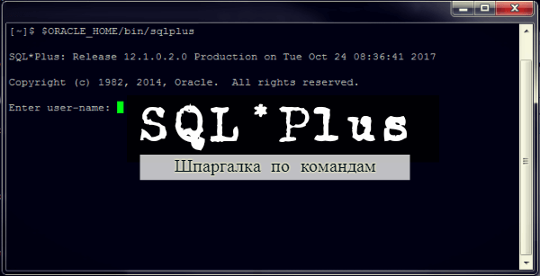
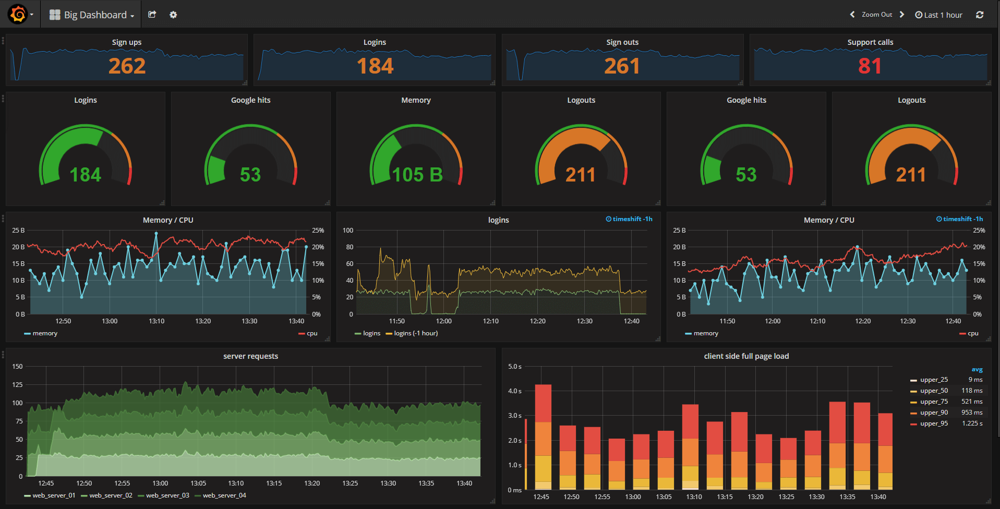

-
RedHat7 / CentOS 7: полезные команды
А у нас на работе случилось тестирование по знанию команд linux :) На самом деле это круто, когда работа мотивирует изучать что-то новое и постоянно развиваться. Тем более, ребята подготовили неплохие конспекты и даже тем, кто с терминалом был 'на вы' при минимальных усилиях разобраться в происходящем оказалось не очень сложно. Глядя на эти конспекты, мне стало немного грустно - место работы имеет свойство меняться, а терять такую крутую подборку не хотелось бы. Да и формат меня местами не устраивал. В итоге было решено переработать материал в такую простыню-шпаргалку, частично используя материалы для подготовки к тестированию, частично - расширяя своими заметками. Основная задача - получить одну страницу, на которой будут собраны наиболее часто используемые мной команды и их параметры. А если еще кому-то будет полезно - добро пожаловать.
Читать дальше... -
Основы анализа безопасности веб-проектов
Совсем недавно прошел на платформе Stepik курс 'Анализ безопасности веб-проектов', от mail.ru. Этот пост представляет собой что-то вроде конспекта курса, который писался по мере прохождения, для того, чтобы проще было систематизировать информацию и обращаться к ней спустя какое-то время. Помимо содержимого курса, старался дополнять материал ссылками на показавшиеся интересными и полезными статьи/ресурсы для более глубокого знакомства с темой.
Читать дальше... -
Шпаргалка по SQL*Plus
SQL*Plus - программа для работы с СУБД Oracle посредством командной строки. Используя SQL*Plus можно выполнять команды SQL и PL/SQL в интерактивном режиме или используя сценарий. К написанию этой статьи меня подтолкнула книга Oracle SQL*Plus: The Definitive Guide, 2nd Edition, написанная Jonathan Gennick. Как обычно, появилось желание систематизировать информацию и представить ее в удобном виде. При этом сразу считаю нужным оговориться, что я использую SQLplus для написания и выполнения скриптов на удаленных машинах, в этой статье описываю именно используемые для этого команды. 
Читать дальше... -
Переводим сайт на HTTPS за несколько минут
HTTPS (HyperText Transfer Protocol Secure) — расширение протокола HTTP для поддержки шифрования в целях повышения безопасности. Основная задача HTTPS - обеспечение безопасности обмена информацией между устройством пользователя и сайтом. Зачем на него переходить? Для сайтов это повышение доверия со стороны пользователей, один из факторов, учитываемых в ранжировании сайта поисковыми системами. С какого-то момента Google обещает помечать сайты, работающие на HTTP в браузере Chrome как небезопасные.
Читать дальше... -
Пишем свои фильтры для Ansible
Ansible "из коробки" имеет множество встроенных фильтров, как реализованных в jinja2, так и собственных. Однако, бывают ситуации, в которых подходящего дефолтного фильтра нет (а очень хочется). В этой короткой статье мы научимя писать свои плагины-фильтры для ansible.
Читать дальше... -
Django: шпаргалка с полезностями
В этой статье осуществлена попытка собрать полезности, по работе с популярным web-фреймворком на Python. Поводом к ее написанию стало прочтение серии из семи замечательных статей, написанных Vitor Freitas в блоге simpleisbetterthancomplex.com. По мере прочтения стало понятно, что вся информация в голове не уляжется и нужно складывать ее в более для того подходящее хранилище. Картинка - постер к одноименному вестерну 1966 года и отношения к делу в общем-то не имеет :)
Читать дальше... -
Ansible: передаем json в теле запроса, используя модуль uri
В этой статье
будет рассказана история потерянного дняречь пойдет о том, какими способами можно передать json в теле запроса, используя модуль Uri на Ansible, что часто может потребоваться при обращении к какому-либо REST API.
Читать дальше... -
Мониторинг за час: influxdb, telegraf, grafana
В этом посте описаны установка и настройка связки технологий, позволяющих быстро и достаточно просто получить работающий сервис мониторинга. 
Читать дальше...